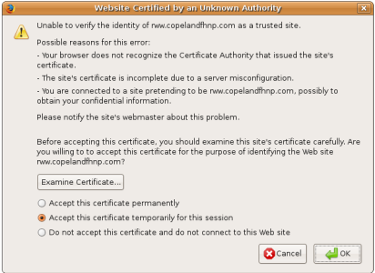

|
Perspectives Home |
Firefox Extension |
Web Demo |
Students: Dan Wendlandt , Ciprian Craciun , and Dinesh Israni
Contact Email: ( pers...@cs.cmu.edu )
Advisers: Dave Andersen and Adrian Perrig
This research has been supported by NSF and Cylab:
Update 1-30-2011: A new version of the Perspectives notary server is available (written totally in python). Check it out! .
Update 1-30-2011: A proof-of-concept Chrome extension for Perspectives is available (Warning: for experimental use only, Chrome development help is welcomed)
Update 11-7-2010: Version 4.0 of the Perspectives Extension is available: Install Now. See our wiki to learn what is new and how you can help.
Perspectives is a new approach to help clients securely identify Internet servers in order to avoid "man-in-the-middle" attacks. Perspectives is simple and cheap compared to existing approaches because it automatically builds a robust database of network identities using lightweight network probing by "network notaries" located in multiple vantage points across the Internet.
Contribute: If you would like to contribute to this project by writing code, running a notary, designing GUI's, or writing documentation please email us.
Other languages: Chinese, Belorussian. (note: translated pages are created by 3rd parties and may be incorrect or out-of-date)
When you use a "secure" protocol like SSL or SSH to communicate on the Internet, your communication is vulnerable to a "man-in-the-middle" attack unless you are able to identify the remote server in a secure manner. One way to do this is to have the server participate in a "Public Key Infrastructure" (PKI) and buy a certificate from a certificate authority like VeriSign.
Unfortunately, PKI's can be expensive and cumbersome to operate, leading to widespread use of a simple and cheap "Trust-on-first-use" mechanism commonly associated with SSH and HTTPS with self-signed certificates. Unfortunately, this comes at the cost of security. For example, here are some familiar warnings from OpenSSH and Firefox:
The authenticity of host 'host.domain.com (192.168.74.49)' can't be established. RSA key fingerprint is 07:fd:fb:9b:03:a2:b4:e8:b3:c9:0f:0b:db:43:1c:1a. Are you sure you want to continue connecting (yes/no)?
@@@@@@@@@@@@@@@@@@@@@@@@@@@@@@@@@@@@@@@@@@@@@@@@@@@@@@@@@@@ @ WARNING: REMOTE HOST IDENTIFICATION HAS CHANGED! @ @@@@@@@@@@@@@@@@@@@@@@@@@@@@@@@@@@@@@@@@@@@@@@@@@@@@@@@@@@@ IT IS POSSIBLE THAT SOMEONE IS DOING SOMETHING NASTY! Someone could be eavesdropping on you right now (man-in-the-middle attack)! It is also possible that the DSA host key has just been changed. The fingerprint for the DSA key sent by the remote host is 4c:68:03:d4:5c:58:a6:1d:bd:17:13:84:14:48:ba:99. Please contact your system administrator. |
 |
Few users bother to verify the correctness of the key manually (hey, we're lazy by nature!), but Perspectives provides a simple "no effort" way to get significantly more information about whether a key is correct for that destination. A client can automatically make a secure connection to one of several publicly available "network notary servers" located around the world. These servers tell the client:
The replies from the network notaries can go a long way toward either providing the user with confidence that the key it received is valid, or that a real threat of a "man in the middle" attack exists.
The end result is that instead of having applications issue bland warnings, which users often ignore, the application can either skip the warning if notary data indicates the the key is valid, or give a very stern warning in the rare cases when an attack appears to be in progress.
This same approach can also be used as a second layer of protection to validate a website certificates that your browser trusts because they appear to be signed by a valid Certificate Authority (CA). Perspectives could detect that a certificate was in fact signed by a malicious CA, since it would identify that the CA-signed certificate is different from the certificate currently in use at the website.
We have a network notary implementation actively running on the RON/IRIS Testbed .
To try it out you can:
Notary Server Privacy Policy: All notary servers adhere to a strict policy of never recording client IP addresses, period. The Perspectives project and its software will only contact Notary servers that follow this privacy policy. Your privacy is important to us.
Both the Firefox and OpenSSH clients let you configure the scenarios when the client should contact Notaries. In fact, you can set the preferences of the Firefox client to ask permission each time before contacting notaries. We plan to improve these privacy features in the future and welcome suggestions.
Our research group operates a set of four publicly available notary server using the RON/IRIS Testbed . The current http_notary_list.txt describes the actively running notaries and their public keys. The Firefox client is configured to use these notaries by default.
It is quite easy to run your own notary if you have a Unix-based server. You can access the source code and install instructions at github:
We welcome contributions to fix bugs or add new functionality.
An older version of the server code (cited in our paper) is still available at gitorious: perspectives-notary-server .
Building the software requires cmake and is documented in the README file.
We recently presented 'Perspectives: Improving SSH-style Host Authentication with Multi-Path Probing' at Usenix ATC 2008.
Usenix Presentation Slides [PPT]
Nanog Presentation Slides [PPT]
Q: Is my computer insecure if I do not install Perspectives?
A: No, you will be safe if you simply go along with Firefox's default suggestion and refuse to connection to any websites that show Security Errors. Perspectives aims to make a better trade-off between security and useability with respect to these Security Errors by distinguishing between the frequent false positives and the rare (but serious) attack scenarios. If you aren't familiar enough with Internet security to know the difference between a certificate signed by a Certificate Authority and a self-signed certificate, Perspectives may not be a good match for you. Hopefully in the future we will be able to work with browser makers like Mozilla and Microsoft to integrate Perspectives-like functionality into the normal browser experience.
Q: But what if an attacker takes over all paths to the destination?
A: There are two answers to that. Please see our academic paper for a detailed security analysis.
1) Perspectives actually keeps a record of the keys used by a service over time. Thus, even if a powerful adversary is able to take over the whole Internet (scenario L_server in the paper), clients can still detect the key as suspicious because the key has recently changed. If the attacker is able to compromise all paths for a long time, then you are in trouble, but then again such a powerful adversary could also fool the so-called "verification procedures" of many certificate authorities, which often consist of a one-time email verification.
2) Even though a powerful adversary can defeat the system, it makes man-in-the-middle attacks much harder. Today an attacker must only be on the path between you and the destination, which isn't very hard. Think about an open wireless network, or the recent DNS attacks which compromise a targeted DNS resolver. Being on all links is much harder, and in the end security is nothing but making an attack harder.
Q: Does Perspectives prevent ''phishing'' attacks, when the user clicks on a link for or is otherwise directed to a DNS address other than the one they intended to reach?
A: No. Perspectives extends your browser's basic SSL authentication mechinisms, which validate that the browser is securely communicating with the server identified in the URL bar. It cannot tell you if that URL is trustworthy or not. For example, if you click on an email with the link https://www.good.com.evil.com/login it will not detect that that this website may be posing as good.com. You must enter in https://www.good.com/login in order to be protected.
Q: I get a red icon and a message that perspectives failed every time the extension contacts notaries. What is going on??
A: The most likely cause is that you are accessing the Internet through a proxy or firewall that is preventing Perspectives from reaching the notaries. Currently, we query notaries over HTTP using either port 80 or port 8080.
Q: What about services in "private" (RFC 1918) space?
A: Unfortunately, we can't do much to monitor the keys used by these services, since our notary servers cannot reach them. Sorry.
Q: How do the recently announced MD5 attack on SSL certificates affect Perspectives?
A: The good news is that using Perspectives to check all SSL certificates can help detect such attacks. Also, the MD5 weaknesses described in the paper do not compromise the security of Perspectives. See our md5 page for details.
Q: I visited a website that uses a blacklisted debian certificate ( more info ) but Perspectives said it was secure, what gives?
A: Detecting such certificates is not the goal of Perspectives (there are already other fine extensions like SSLBlacklist that can help you). Perspectives plays a role that is similar to a certificate authority: avoiding man-in-the-middle attacks by attempting to determine if an SSL certificate (i.e., a public key) received by the browser is the actual certificate in use by the visited website. Perspectives does not do anything to protect you against a poorly run website where the administrator uses an insecure key pair (in the limit, the website admin could publish the private key, totally undermining security).
If you have questions, comments, or are interested in contributing by testing releases, writing code, or running a notary server, please click on the following link to reveal our contact email address: pers...@cs.cmu.edu .
Bug Reports:
We welcome bug reports and feature requests for our software. If you are reporting a bug, please report the version of the software used, your platform (OS, distro, and browser if relevant), and the exact circumstances needed to reproduce the bug. We will do our best to work with you and resolve the issue.If you download our software or are interested in when new versions will become available, please register for our LOW-VOLUME perspectives-announce email list. With the possible exception of critical security issues, we will not send out more than one email per month.